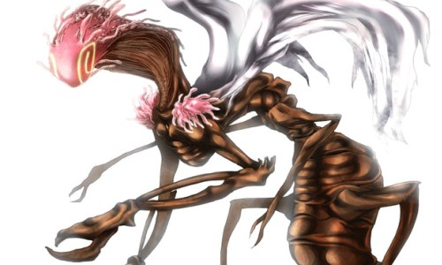
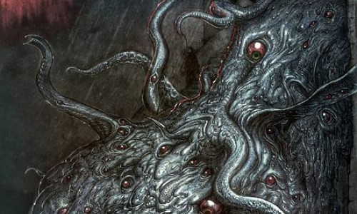

クトゥルフ神話とは

クトゥルフ（Cthulhu）
一般にタコに似た頭部、頭足類のような触腕を無数に生やした顔、巨大な鉤爪のある手足、水かきを備えた二足歩行の姿、ぬらぬらした鱗かゴム状の瘤に覆われた数百メートルもある山のように大きな身体、背にはドラゴンのようなコウモリに似た細い翼を持った姿をしているとされる。
名前はCthulhuと表記されるが作中では人間には発音出来ないとされている。
一般にタコに似た頭部、頭足類のような触腕を無数に生やした顔、巨大な鉤爪のある手足、水かきを備えた二足歩行の姿、ぬらぬらした鱗かゴム状の瘤に覆われた数百メートルもある山のように大きな身体、背にはドラゴンのようなコウモリに似た細い翼を持った姿をしているとされる。
名前はCthulhuと表記されるが作中では人間には発音出来ないとされている。

ユゴスよりのもの（Fungi from Yuggoth）
ミ=ゴとも呼ばれている。体長は5フィート（約1.5m）ほどで、一見すると薄赤色の甲殻類のような見た目である。３対の先に鉤爪のついた手足があり、背中には１対の羽がある。頭部は渦巻いたような模様と、多数の触角がある。体組織は地球でいうところの菌類に近いものであるが、地球上にはない物質で構成されているため、触れたり目視することはできても、写真などには写らない。
ミ=ゴとも呼ばれている。体長は5フィート（約1.5m）ほどで、一見すると薄赤色の甲殻類のような見た目である。３対の先に鉤爪のついた手足があり、背中には１対の羽がある。頭部は渦巻いたような模様と、多数の触角がある。体組織は地球でいうところの菌類に近いものであるが、地球上にはない物質で構成されているため、触れたり目視することはできても、写真などには写らない。

ショゴス（Shoggoth）
太古の地球に飛来した宇宙生物「古のもの」達によって創造された漆黒の玉虫色に光る粘液状生物で、表面に無数の目が浮いている。不定形で決まった姿を持たず、必要に応じて自在に形態を変化させ、さまざまな器官を発生させることができる。タールでできたアメーバのようだと表現される。およそ15フィート（約4m）とされているが個体によって大きさが違う。水中で活動するように作られたため地上では、動きが鈍くなる。
太古の地球に飛来した宇宙生物「古のもの」達によって創造された漆黒の玉虫色に光る粘液状生物で、表面に無数の目が浮いている。不定形で決まった姿を持たず、必要に応じて自在に形態を変化させ、さまざまな器官を発生させることができる。タールでできたアメーバのようだと表現される。およそ15フィート（約4m）とされているが個体によって大きさが違う。水中で活動するように作られたため地上では、動きが鈍くなる。